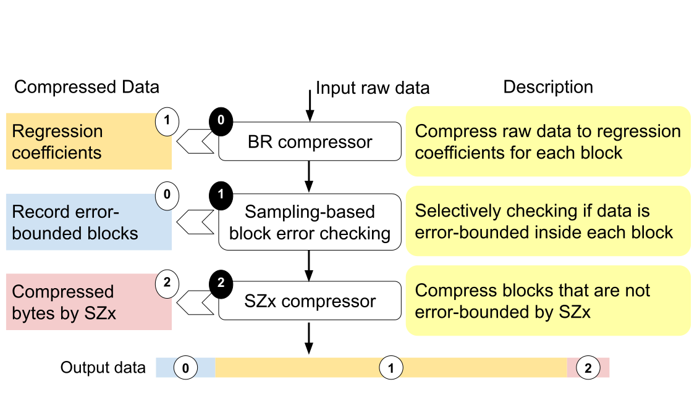
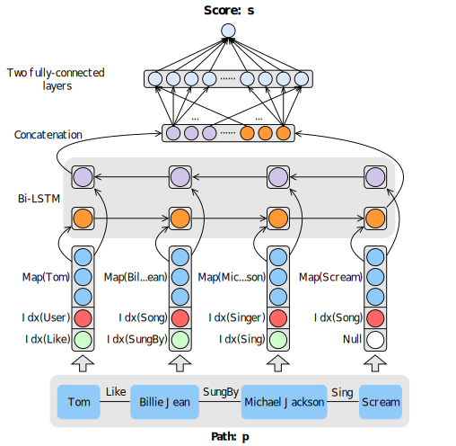

Zhengyang He
About Me
I am a Ph.D. candidate in the Computer Science Department at the University of Iowa. I am a member of IOWA-HPC Group and advised by Guanpeng Li. Before coming to UIowa, I received my Master’s degree (Sep.2018-Jun.2021, major: Computer Science) at Huazhong University of Science and Technology, Wuhan, where I was advised by Feng Zhao and a member of Cluster and Grid Computing Lab (CGCL) lead by Hai Jin. I received my Bachelor’s degree (Sep.2014-Jun.2018, major: Software Engineering) at Hunan University, Changsha.
My research generally lies in High-Performance Computing (HPC) and specifically focuses on:
- Data Compression: GPU Compression, In-situ Compression, Compression for Science
- Fault Tolerance: HPC Resilience, Software-directed Fault Tolerance
- Parallel Computing: Massive Parallelism, Parallel Reduction, Data-flow Architecture
- Compiler Optimization: Program Analysis, Code Transformation, IR Optimization
I developed and currently maintain cuSZp, an ultra-fast GPU compression framework designed to tackle big data challenges with high-speed requirements. If you’re working with large-scale data and need efficient compression, please feel free to explore the GitHub repository and give it a try!
Selected Publications
-
 CCGrid'23IEEE/ACM International Symposium on Cluster Computing and the Grid (CCGrid), 2023
-
 WWWJ'21World Wide Web (WWWJ), 2021
 ISSRE'23
ISSRE'23
Powered by Jekyll and Minimal Light theme.